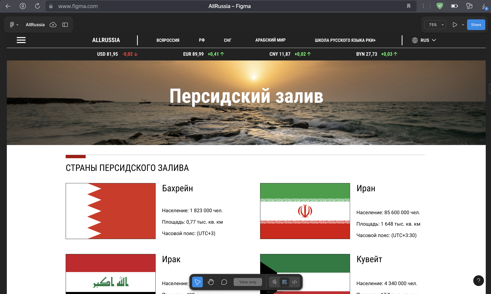
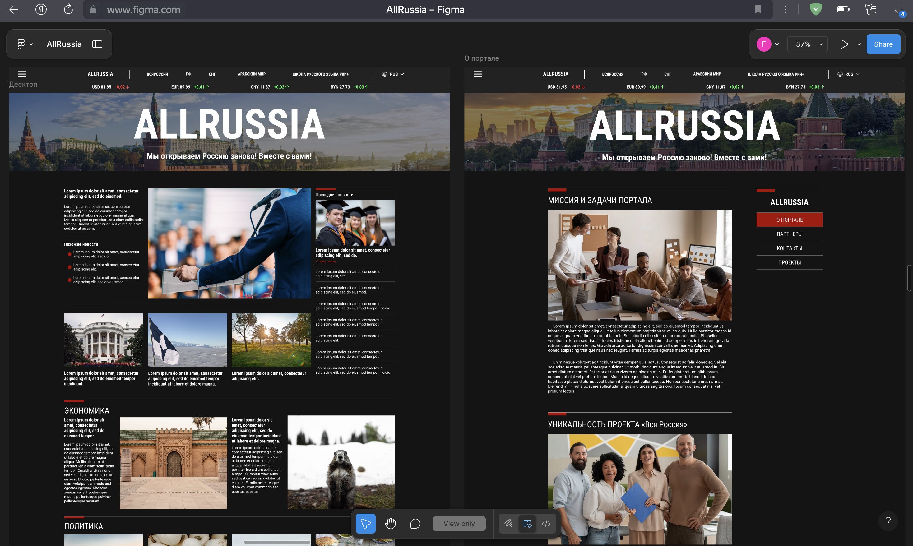

Создание рабочей тёмной темы
20.02.2025Добавлена полноценная тёмная тема для сайта, учитывающая особенности всех основных страниц.

Журнал проекта AllRussia.info
Добавлена полноценная тёмная тема для сайта, учитывающая особенности всех основных страниц.
Разработана и наполнена отдельная страница, посвящённая региону Персидского залива.
Были добавлены флаги, которых не хватало в отображении округов на карте сайта.
Обновлён визуальный стиль заголовка сайта — заменено изображение в header для улучшения восприятия.
Произведена серия доработок, направленных на устранение выявленных ошибок и улучшение стабильности.